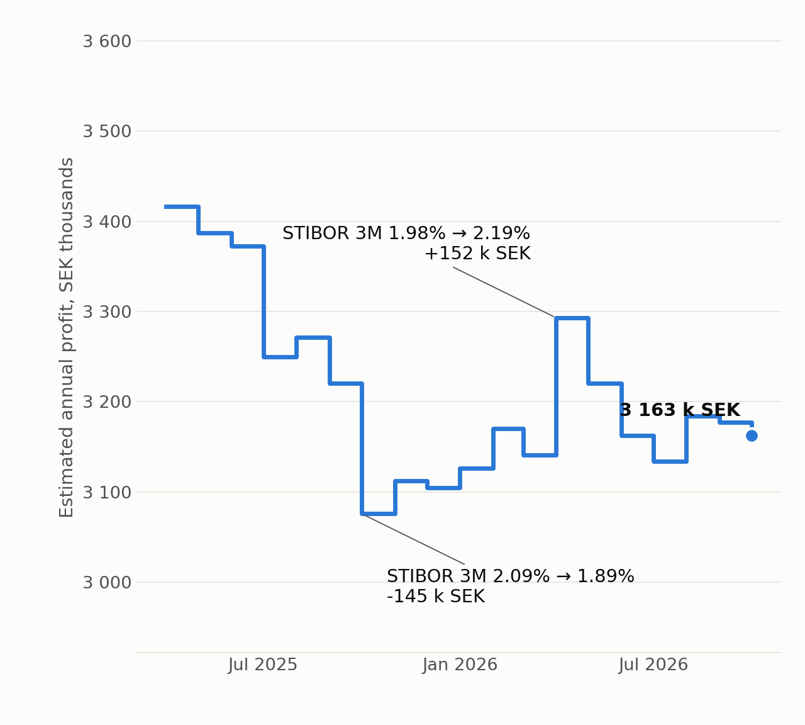

ETL course · Nackademin
What does a STIBOR move cost a car-loan book?
18 months: −7.4% of estimated profit.
A monthly SQL Server ETL that prices a vehicle portfolio from STIBOR 3M. Scheduled, logged and tested.
The brief
An analyst ran these queries by hand.
Every month.
A bank gets a vehicle file from an agency each month. Estimated profit per car depends on its energy class, its credit risk and a floating base rate (STIBOR 3M).
Before
Manual queries, monthly
After
SELECT * FROM
LoanProfitEstimates_202610;
annual profit = price × (STIBOR + margin) / 100
The pipeline
One scheduled job. Five stages.
Agency fileCarInformation_yyyymm
→
Stagingraw text
↓
Validateclean or reject, with a reason
→
LoanProfit
Estimates_yyyymmrebuilt in one transaction
STIBOR 3MSFBF export, by month
Log tableevery step, every warning
Mailrows + table name
SQL Agent runs it on the 1st of every month. The analyst never has to.
Messy input
180 rows in.
176 out. 4 rejected on purpose.
I planted four bad rows in every file. Padded and lower-case energy classes get cleaned. The rest are rejected, logged by reason and kept for inspection.
| RECORD | VALUE | REJECTED BECAUSE |
|---|
| 71 | price: NULL | Missing price |
| 140 | price: 0.00 | Non-positive price |
| 30 | risk tier: X | Unknown risk tier |
| 167 | class: Steam | Unknown energy class |
Missing data
No rate for this month?
Say so. Out loud.
WARNING · INTEREST_RATE
Base interest rate for the current month is missing. Value from the previous month was used (2026-09-01, 2.03%, STIBOR3M).
The job falls back to the most recent month, and writes down which month and which value. No rate at all? Hard stop, no guessing.
(October's rate was left out on purpose to test this.)
Design
The mail must never
fail the job.
- Mail sits outside the main try/catch. A broken mail server is a warning, not a failed run.
- The output table is rebuilt in one transaction. The analyst never sees half a table.
- Failures are re-thrown. SQL Agent shows red when it should.
The answer
18 months of STIBOR 3M.
−7.4% estimated profit.

Same 176 vehicles, repriced at each month's STIBOR 3M. 3,416k → 3,163k SEK a year.
Proof
10 end-to-end tests.
Run it twice: same result.
- Formula, risk margin and depreciation checked row by row
- Rate fallback and its exact warning
- Rejects counted per rule
- Missing file fails loudly, creates nothing
- Re-run gives no duplicates
- SQL Agent job succeeded on its first start
Takeaway
A job that fails loudly is a feature.
One that succeeds quietly with the wrong rate is a bug.
Code, tests and the full write-up:
github.com/DavidFarm/loan-profit-etl
Rates and vehicle models are real (STIBOR 3M from SFBF, non-commercial education licence; fueleconomy.gov). Prices and risk tiers are synthetic.